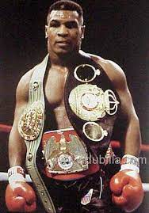

Mike tyson

Click the below given links for further information
Mike
Mike Tyson Michael Gerard Tyson (born June 30, 1966) is an American former professional
boxer who competed from 1985 to 2005. Nicknamed "Iron Mike"[4] and
"Kid Dynamite" in his early career, and later known as "The Baddest
Man on the Planet",[5] Tyson is considered to be one of the greatest
heavyweight boxers of all time.[6] He reigned as the undisputed
world heavyweight champion from 1987 to 1990. Tyson won his first 19
professional fights by knockout, 12 of them in the first round.
Claiming his first belt at 20 years, four months, and 22 days old,
Tyson holds the record as the youngest boxer ever to win a heavyweight
title.[7] He was the first heavyweight boxer to simultaneously hold
the WBA, WBC and IBF titles, as well as the only heavyweight to unify
them in succession
Tyson was The Ring magazine's Fighter of the Year in 1986 and
1988.[161] A 1998 ranking of "The Greatest Heavyweights of
All-Time" by The Ring magazine placed Tyson at number 14 on
the list.[162] Despite criticism of facing underwhelming
competition during his run as champion, Tyson's knockout power
and intimidation factor made him the sport's most dynamic
box-office draw. According to Douglas Quenqua of The New York
Times, "The [1990s] began with Mike Tyson, considered by many
to be the last great heavyweight champion, losing his title to
the little-known Buster Douglas. Seven years later, Mr. Tyson
bit Evander Holyfield's ear in a heavyweight champion
bout—hardly a proud moment for the sport."
>
About amature career of Mike Tyson
As an amateur, Tyson won gold medals at the 1981 and 1982
Junior Olympic Games, defeating Joe Cortez in 1981 and beating
Kelton Brown in 1982. Brown's corner threw in the towel in the
first round. In 1984 Tyson won the gold medal at the Nation.
Golden Gloves held in New York, beating Jonathan Littles. He
fought Henry Tillman twice as an amateur, losing both bouts
by decision. Tillman went on to win heavyweight gold at the
1984 Summer Olympics in Los Angeles.
According to List of awards and honors received by Mike tyson :
In 2016, he was awarded as best new performer.
In 1889 he was winner of favourite male athlete .